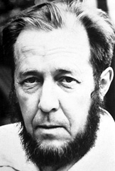

Aleksandr Solzhnenitsyn
Russians in America: The Third Wave

Aleksandr Solzhenitsyn
1918-
For the Nobel prize Committee, Solzhenitsyn offered his own autobiography. The site also contains a bibliography of his works.
In 1941, a few days before the outbreak of the war, I graduated from the Department of Physics and Mathematics at Rostov University. At the beginning of the war, owing to weak health, I was detailed to serve as a driver of horsedrawn vehicles during the winter of 1941-1942. Later, because of my mathematical knowledge, I was transferred to an artillery school, from which, after a crash course, I passed out in November 1942. Immediately after this I was put in command of an artillery-position-finding company, and in this capacity, served, without a break, right in the front line until I was arrested in February 1945. This happened in East Prussia, a region which is linked with my destiny in a remarkable way. As early as 1937, as a first-year student, I chose to write a descriptive essay on "The Samsonov Disaster" of 1914 in East Prussia and studied material on this; and in 1945 I myself went to this area (at the time of writing, autumn 1970, the book August 1914 has just been completed).
I was arrested on the grounds of what the censorship had found during the years 1944-45 in my correspondence with a school friend, mainly because of certain disrespectful remarks about Stalin, although we referred to him in disguised terms. As a further basis for the "charge", there were used the drafts of stories and reflections which had been found in my map case. These, however, were not sufficient for a "prosecution", and in July 1945 I was "sentenced" in my absence, in accordance with a procedure then frequently applied, after a resolution by the OSO (the Special Committee of the NKVD), to eight years in a detention camp (at that time this was considered a mild sentence).
I served the first part of my sentence in several correctional work camps of mixed types (this kind of camp is described in the play, The Tenderfoot and the Tramp). In 1946, as a mathematician, I was transferred to the group of scientific research institutes of the MVD-MOB (Ministry of Internal Affairs, Ministry of State Security). I spent the middle period of my sentence in such "SPECIAL PRISONS" (The First Circle). In 1950 I was sent to the newly established "Special Camps" which were intended only for political prisoners. In such a camp in the town of Ekibastuz in Kazakhstan (One Day in the Life of Ivan Denisovich), I worked as a miner, a bricklayer, and a foundryman. There I contracted a tumor which was operated on, but the condition was not cured (its character was not established until later on).
One month after I had served the full term of my eight-year sentence, there came, without any new judgment and even without a "resolution from the OSO", an administrative decision to the effect that I was not to be released but EXILED FOR LIFE to Kok-Terek (southern Kazakhstan). This measure was not directed specially against me, but was a very usual procedure at that time. I served this exile from March 1953 (on March 5th, when Stalin's death was made public, I was allowed for the first time to go out without an escort) until June 1956. Here my cancer had developed rapidly, and at the end of 1953, I was very near death. I was unable to eat, I could not sleep and was severely affected by the poisons from the tumor. However, I was able to go to a cancer clinic at Tashkent, where, during 1954, I was cured (The Cancer Ward, Right Hand). During all the years of exile, I taught mathematics and physics in a primary school and during my hard and lonely existence I wrote prose in secret (in the camp I could only write down poetry from memory). I managed, however, to keep what I had written, and to take it with me to the European part of the country, where, in the same way, I continued, as far as the outer world was concerned, to occupy myself with teaching and, in secret, to devote myself to writing, at first in the Vladimir district (Matryona's Farm) and afterwards in Ryazan.
During all the years until 1961, not only was I convinced that I should never see a single line of mine in print in my lifetime, but, also, I scarcely dared allow any of my close acquaintances to read anything I had written because I feared that this would become known. Finally, at the age of 42, this secret authorship began to wear me down. The most difficult thing of all to bear was that I could not get my works judged by people with literary training. In 1961, after the 22nd Congress of the U.S.S.R. Communist Party and Tvardovsky's speech at this, I decided to emerge and to offer One Day in the Life of Ivan Denisovich.
Such an emergence seemed, then, to me, and not without reason, to be very risky because it might lead to the loss of my manuscripts, and to my own destruction. But, on that occasion, things turned out successfully, and after protracted efforts, A.T. Tvardovsky was able to print my novel one year later. The printing of my work was, however, stopped almost immediately and the authorities stopped both my plays and (in 1964) the novel, The First Circle, which, in 1965, was seized together with my papers from the past years. During these months it seemed to me that I had committed an unpardonable mistake by revealing my work prematurely and that because of this I should not be able to carry it to a conclusion.
It is almost always impossible to evaluate at the time events which you have already experienced, and to understand their meaning with the guidance of their effects. All the more unpredictable and surprising to us will be the course of future events.
Solzhenitsyn is well covered on the Intent. In Russian and in English
Here are some sites
Who, What, Where and When?
Internet Links
Другие Ссылки